原型与继承
为什么需要原型?
每执行一次函数, 函数内部的所有内容, 都会被重新创建一次,所以构造器创建对象的时候, 实际上会有成员重复. 如果使用 构造器 this.方法名 = function .... 方式创建对象. 那么每一个对象 对应的方法就会重复. 可以借助函数的原型来解决对象方法重复创建这一问题
对象共有属性重复创建问题
function Person ( name ) {
this.name = name;
// 可以说话, 需要有一个方法
this.sayHello = function () {
console.log( '你好, 我是 ' + this.name );
};
}
var p1 = new Person( '李雷' );
var p2 = new Person( '韩梅梅' );
p1.sayHello();
p2.sayHello();
// 由于函数 Person 创建对象的时候 会 同时生成 里面的 sayHello 方法
// 因此使得每一个 Person 的对象, 都包含一个内容完全相同, 不同的 sayHello 方法
// 验证
console.log( p1.sayHello == p2.sayHello );
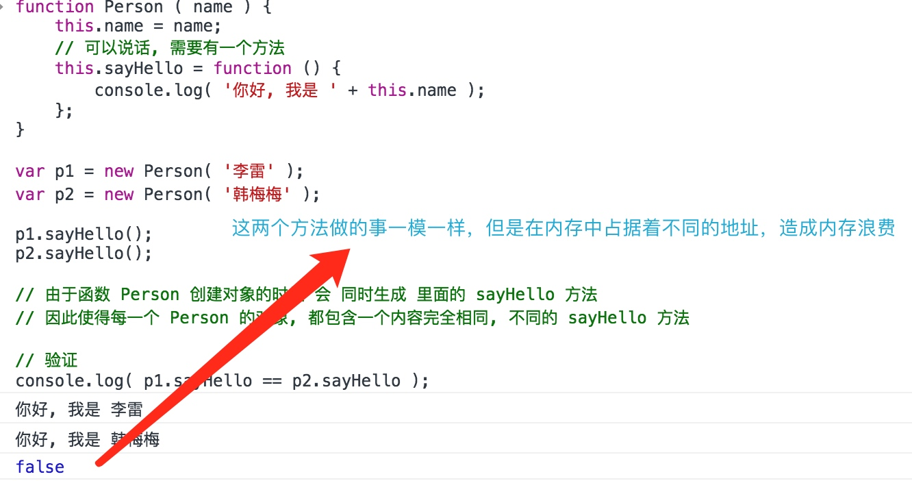
原型概念
每一个函数都有一个属性
prototype该属性指向一个对象. 每一个由该函数作为构造器创建的对象, 都会默认连接到该对象上. 如果访问对象的方法, 而对象中没有定义, 就会在这个 构造函数.prototype表示的对象中去找.
使用原型解决重复创建问题
function Person ( name ) {
this.name = name;
}
Person.prototype.sayHello = function () {
console.log( '你好, 我是 ' + this.name );
};
Person.prototype.walk = function () {
console.log( this.name + ' 走了' );
};
var p1 = new Person( '李雷' );
var p2 = new Person( '韩梅梅' );
p1.sayHello();
p2.sayHello();
// 验证
console.log( p1.sayHello == p2.sayHello );
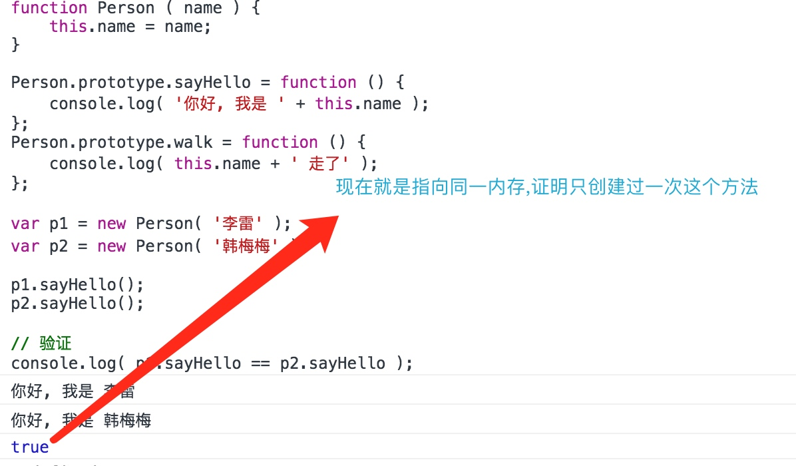
原型属性
针对构造函数而言, 原型就是 构造函数的
prototype属性, 常常将其称为 原型属性.但是该属性指向的是一个对象. 针对实例对象而言, 构造函数的原型属性就是 实例对象的 原型对象.
function Person () {};
// Person是构造函数,Person.prototype是构造函数的原型属性,Person.prototype本质也是一个对象
var p = new Person();
// p指向的是实例对象(可以认为p就是实例对象),Person.prototype就是实例对象p的原型对象
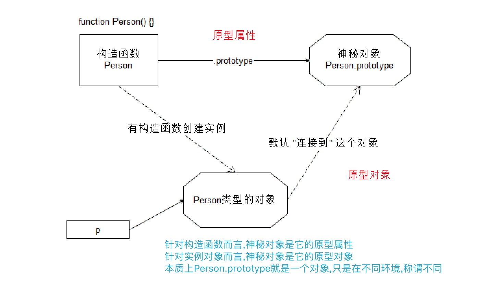
使用原型
通常将共享的方法放到原型中, 而独有数据与行为放在当前对象(构造函数)里
直接给原型对象添加成员
// 1. 构造函数,添加独有属性
function Person ( name, age, gender ) {
this.name = name;
this.age = age;
this.gender = gender;
}
// 2.共有属性和方法放在原型中(直接给原型对象添加成员)
Person.prototype.sayHello = function () {
console.log( '你好, 我是 ' + this.name );
};
Person.prototype.eat = function () {
console.log( this.name + '在吃饭' );
};
// 3.通过构造函数创建实例对象
var p1 = new Person( 'lilei', 19, '男' );
var p2 = new Person( 'hanmeimei', 18, '女' );
// 4.实例对象通过原型对象寻找到共有的方法
p1.sayHello();
p2.sayHello();
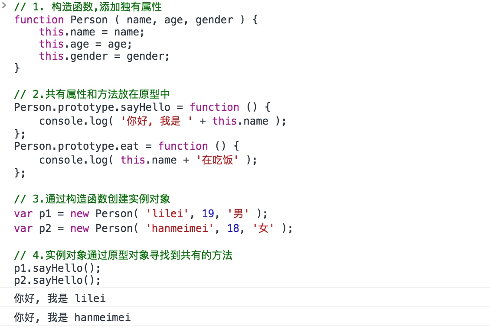
直接替换原型对象
// 1.构造函数,添加独有属性
function Person ( name, age, gender ) {
this.name = name;
this.age = age;
this.gender = gender;
}
// 2.共有属性和方法放在原型中(替换原型对象)
Person.prototype = {
sayHello: function () {
console.log( '第二种做法: 你好, 我是 ' + this.name );
}, eat: function () {
console.log( '第二种做法: ' + this.name + ' 在吃饭' );
}
};
// 3.通过构造函数创建实例对象
var p1 = new Person( 'lilei', 19, '男' );
var p2 = new Person( 'hanmeimei', 18, '女' );
// 4.实例对象通过原型对象寻找到共有的方法
p1.sayHello();
p2.sayHello();
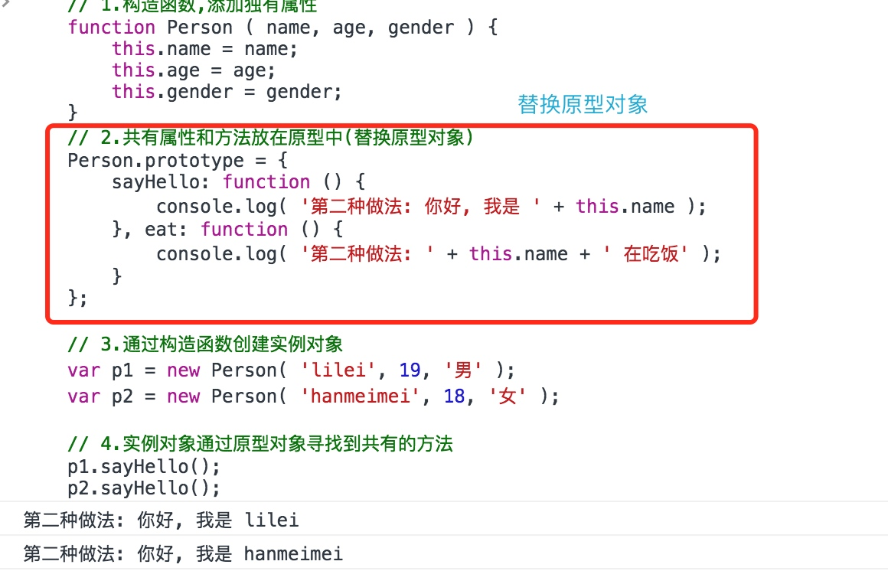
constructor属性
原型对象中都有一个
constructor属性,该属性指向的是当前对象的构造函数
- 直接给原型对象添加成员,
constructor依旧指向原构造函数
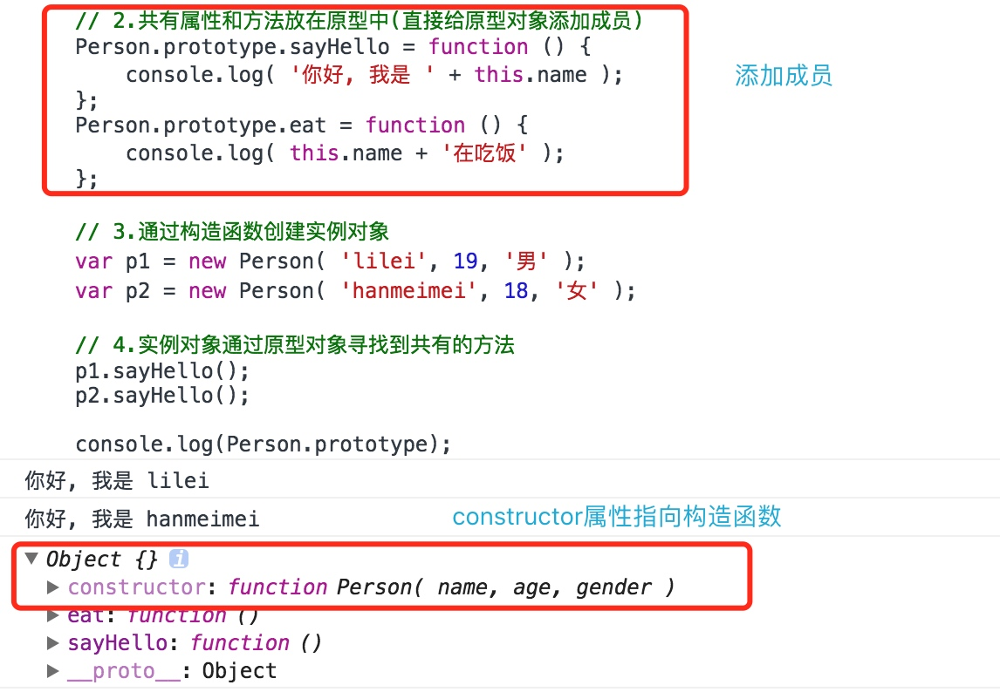
- 替换原型对象,则替换后的原型对象中没有
constructor属性,需要手动添加
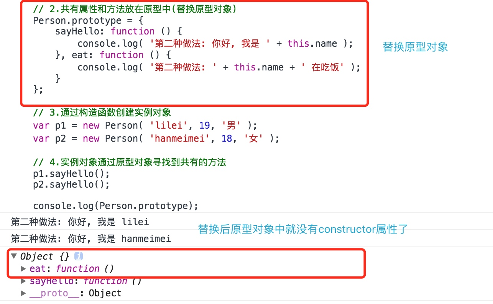

原型结构图
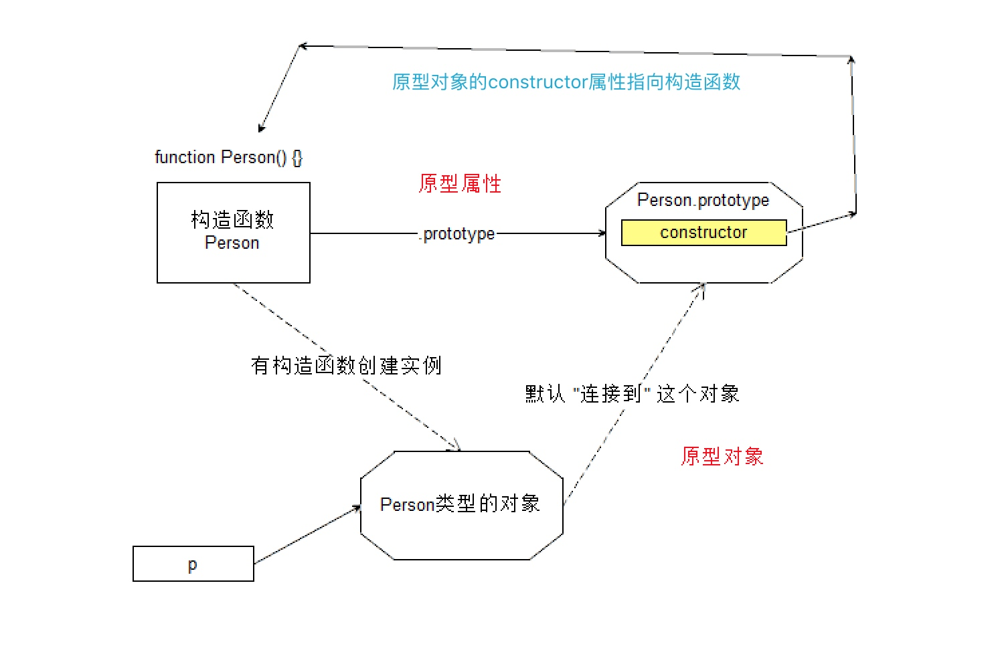
原型__proto__
使用构造函数, 就使用
prototype属性访问原型 使用实例对象, 就使用 非标准的__proto__属性访问原型 但实际上访问的都是同一个对象,即原型对象
兼容低版本浏览器支持proto
// 低版本浏览器可能不支持__proto__方法 但肯定可以通过构造函数访问prototype
// 所以可以通过实例对象的constructor属性先访问到构造函数,
// 再通过构造函数访问到prototype,从而实现实例对象访问原型对象
function __getProto__(instance){
return instance.constructor.prototype;
}
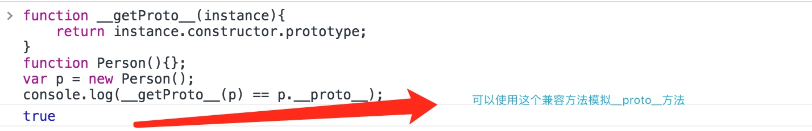
继承
JS的继承:利用对象的动态特性添加成员, 或直接替换对象的方式修改原型链结构. 使得当前对象的原型链上的对象具有某些成员. 那么当前对象就可以使用这些成员从而实现继承的关系.
原型式继承
原型与实例对象 在 js 中, 方法定义在原型对象中, 而属性定义在实例对象中 调用方法的时候, 实例对象本身是没有该成员的, 但是依旧可以调用 该方法, 好像这个方法就是该实例对象的一样. 因此, 我们称该实例对象继承自原型对象 任何一个实例对象, 都是继承自其原型对象的, 即原型式继承.
相关概念
| 概念 | 其他语言 | JavaScript |
|---|---|---|
| 类 class | 模板 | 构造函数, 类名就是构造函数名 |
| 子类 subclass | 派生的模板 | 原型设置为指定对象的构造函数 |
| 实例 instance | 某个类的对象 | 构造函数创建的对象 |
| 实例成员(实例方法, 实例属性) | 对象的方法和属性 | 对象的方法和属性 |
| 静态方法 | 类方法 | 直接绑定在函数上的方法 |
| 静态属性 | 类属性 | 直接绑定在函数上的属性 |
属性访问原则(重点)
- 对象在调用方法或访问属性的时候, 首先在当前对象中查询. 如果有该成员直接使用并停止查找.
- 如果没有该成员就在其原型对象中查找. 如果有该成员则使用, 并停止查找.
- 如果还没有就到 该对象的 原型对象 的 原型对象中查找. ...
- 最后会查到 Object.prototype 上. 如果还没有则 返回 undefined.
function Person ( name, age, gender ) {
this.name = name;
this.age = age;
this.gender = gender;
}
Person.prototype.name = 'itcast';
var p = new Person( '李雷', 19, '男' );
console.log( p.name );
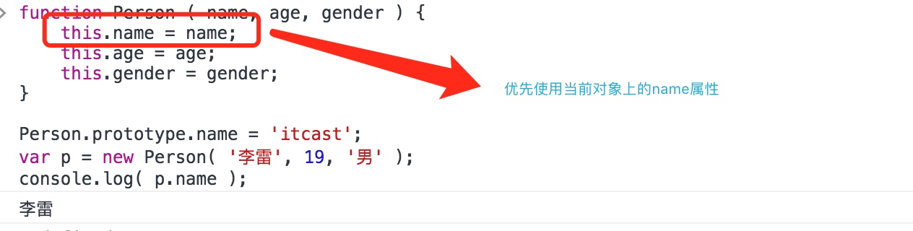
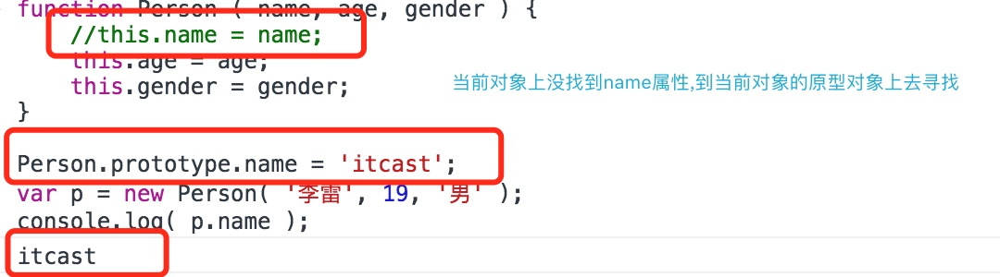
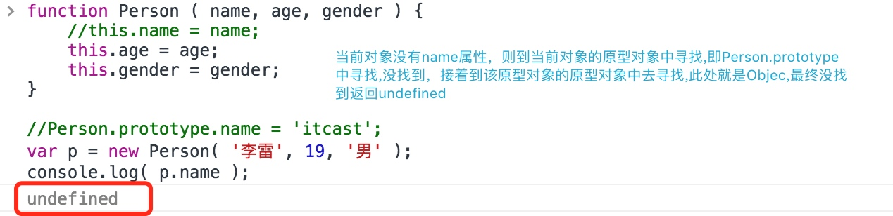
使用对象修改原型对象属性
使用对象无法直接修改原型对象中的属性值,因为根据对象的动态特性会直接给当前对象添加一个同名属性并赋值,并不会修改原型对象中的属性值
function Person () {
}
// 原型中添加name属性
Person.prototype.name = 'itcast';
// 创建实例对象
var p = new Person();
console.log( p.name );
p.name = 'itheima';
// 此处看似在做修改,实则根据对象的动态特性会给实例对象p添加一个
// name属性,并赋值‘itheima’,根本就不会影响到原型对象中的name属性
console.log( p.name );
// 重新创建一个对象
var p1 = new Person();
console.log( 'p1: ' + p1.name );// 继续使用原型对象中的name属性
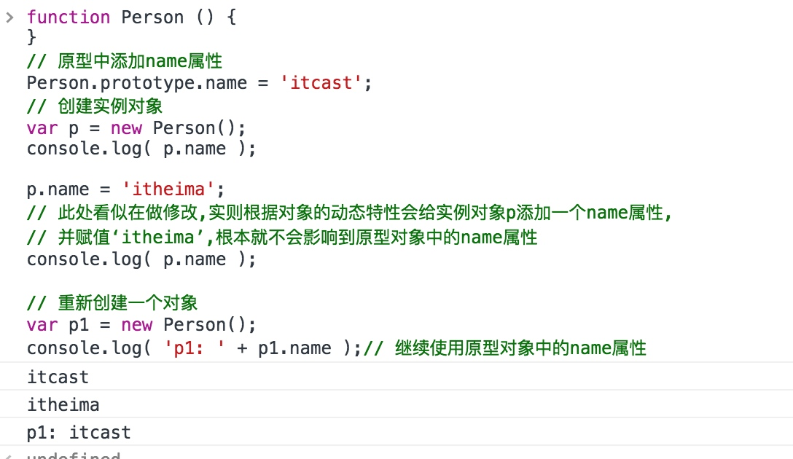
混入式继承
使用赋值操作,可以将对象1中的属性添加到对象2上,使得对象2既具有自身的属性又具有对象1的属性,这种方式叫做混入式继承
function __mix__ ( obj, obj1 ) {
// 遍历obj1,将obj1中所有的属性添加到obj上
for ( var k in obj1 ) {
obj[ k ] = obj1[ k ];
}
}
var o1 = { name: '张三', age: 19 };
var o2 = { gender: '男' };
__mix__( o2, o1 );
console.log(o2);// 此时的o2即完成了混入式继承,既具有自身属性又具有o1的所有属性
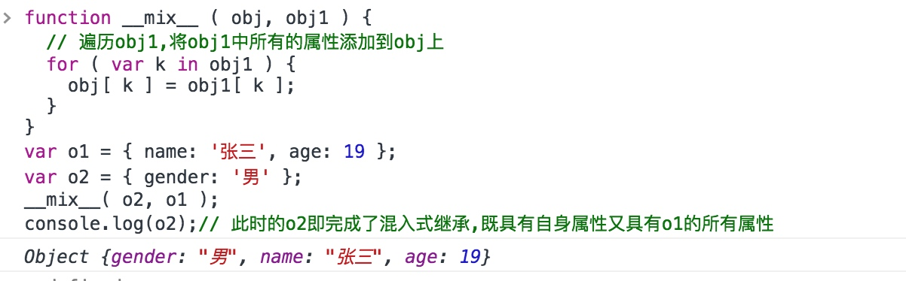
混入式继承-扩展
__mix__一般代表私有方法,extend代表扩展方法 这里只是将混入式继承作为一个对象的方法,可以直接使用对象调用这样的混入方法实现继承
var o = {
extend: function ( obj ) {
// 将 obj 中的成员 加到 当前对象 this 上
for ( var i = 0; i < arguments.length; i++ ) {
for ( var k in arguments[ i ] ) {
this[ k ] = arguments[ i ][ k ];
}
}
}
};
o.extend({
name: '李四'
}, {
age: 19,
gender: '男'
}, {
sayHello: function () {
console.log( 'Hello JS' );
}
});
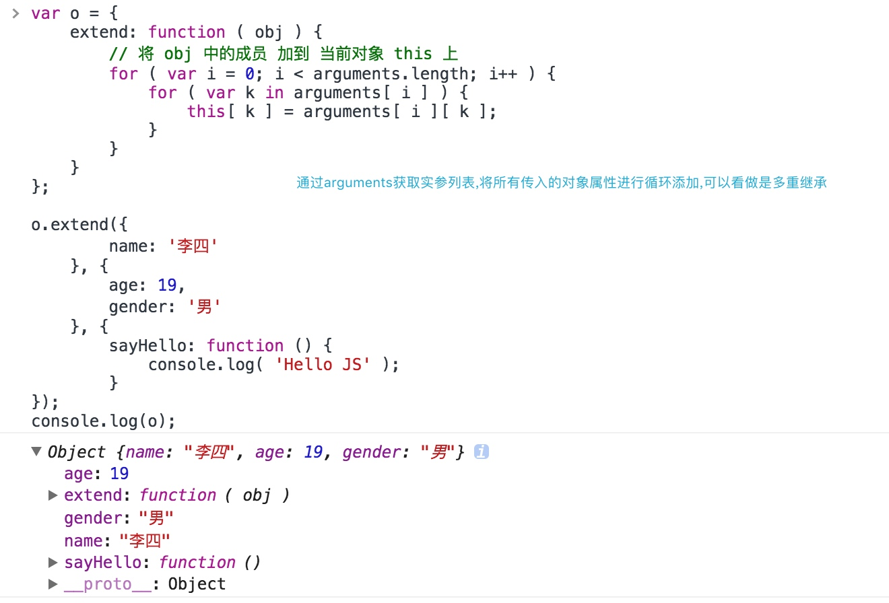
混合式继承
混合式继承就是将多个对象的各个功能混合到一起, 加到构造函数的原型对象上.那么该构造函数创建的实例 就继承自多个对象了.实际上是原型继承和混入继承的结合。
function Person () {}
// 给原型对象添加混入方法
Person.prototype.extend = function ( obj ) {
for ( var k in obj ) {
this[ k ] = obj[ k ];
}
};
var p = new Person();
// 继承
Person.prototype.extend( {
sayHello: function () {
console.log( '你好, 我是新加的' )
},
walk: function () {},
eat: function () {}
} );
p.sayHello();
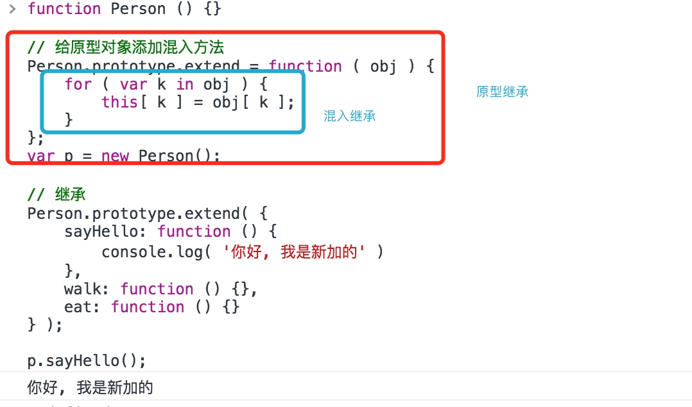
Object.create()实现继承
创建对象调用
var obj = Object.create(o),则创建的对象obj的原型对象就是参数对象o
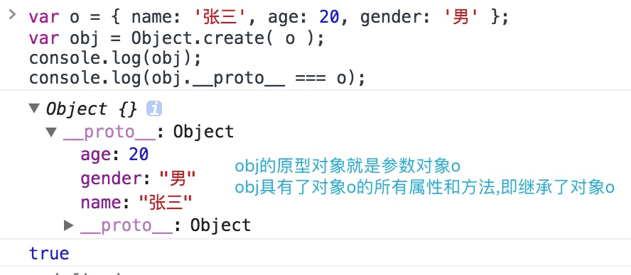
实现原理
Object.create = function ( o ) {
function F() {}
F.prototype = o;
return new F();
};
兼容写法
// 这种写法也可以实现兼容,但是因为是直接给内置对象添加方法,不利于后期维护
if ( !Object.create ) {
Object.create = function ( o ) {
function F() {}
F.prototype = o;
return new F();
};
}
/*************************************/
// 通用兼容函数
function createWithObject ( obj ) {
// 先判断系统是否支持原生的方法,如果支持则使用原生方法
if ( Object.create ) {
return Object.create( obj );
} else {
function F() {}
F.prototype = obj;
return new F();
}
}